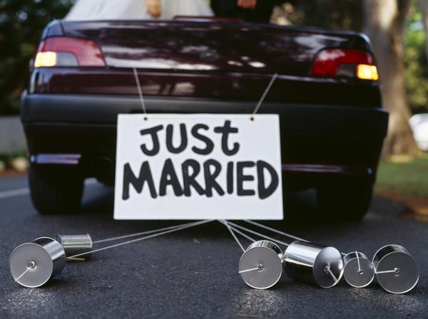

Baby, I know I just met you, but goddamn I'm in love with you.
Let's get married. Right now. This bear can officiate.
Cop, I can't tell you how happy I am. I thought I was going to rot in space jail for the rest of my life,
but instead I met the love of my life.
Baby, you're all I ever needed.
They lived happily for all eternity.
The end.